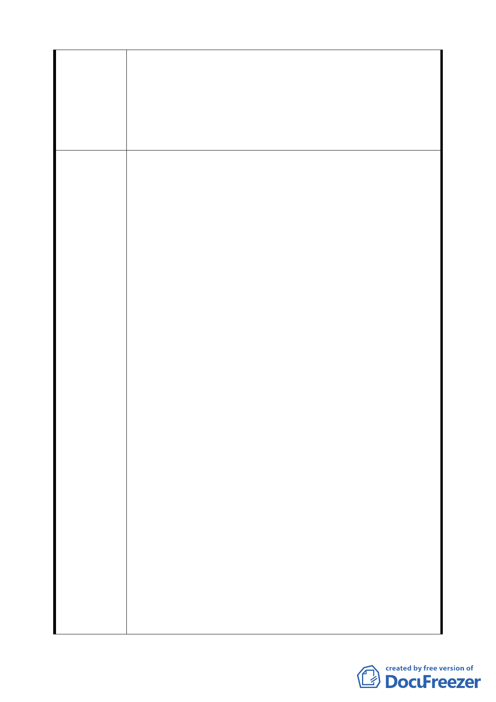

全街廓，因部份街廓土地面積甚大，且開發金額龐大，若
無法採用分期分區開發方式，恐將影響民間業者之意願。
10.新計畫「住宅區地下開挖率減少 5％之規定」部分：
減少住宅地下開挖率，勢必導致地下開挖深度增加層數，
為提供足夠之停車空間，除增加民間業者之開發成本，並
製造更多耗能之地下建築物。
1.「Ｃ2 商業區（供觀光旅館使用）」部分：
（1）直接取消一般旅館業及國際觀光旅館總容積樓地板面積
之二分之一以上的規定，並允許可供住宅使用，回歸第
三種商業區之使用組別規定。
（2）採用彈性放寬方式，雖規定上述使用組別達總容積樓地
板面積之二分之一以上的規定，但經台北市都市設計及
土地使用開發許可審議委員會審議通過者，不在此限。
2.「Ｃ3 商業區（供商業娛樂設施使用）」部分：
（1）直接取消部份使用組別總和達總容積樓地板面積之二分
之一以上的規定，並允許可供住宅使用，回歸第三種商
業區之使用組別規定。
（2）採用彈性放寬方式，雖規定部份使用組別總和達總容積
樓地板面積之二分之一以上的規定，但經台北市都市設
計及土地使用開發許可審議委員會審議通過者，不在此
建議辦法
限。
3.「Ｃ4、Ｃ5、Ｃ6、Ｃ7、Ｃ8、Ｃ9 商業區(供商務設施使用)」
部分：
建議依據台北市土地使用分區管制規則第三種商業區允許
使用組別規定，應增加可供作住宅使用之項目。
4.本計畫「住宅區」部分：
（1）直接取消住宅使用樓地板面積不得少於總容積樓地板面
積之三分之二以上的規定。
（2）採用彈性放寬方式，雖規定住宅使用樓地板面積不得少
於總容積樓地板面積之三分之二以上的規定，但經台北
市都市設計及土地使用開發許可審議委員會審議通過
者，不在此限。
5.「R13 住宅區(特)，R1、R14、R15、R16 之住宅區(供住宅
使用)，R4~R10 住宅區(供商務住宅使用)與街廓編號 R17
第三種住宅區(特)」部分：
27